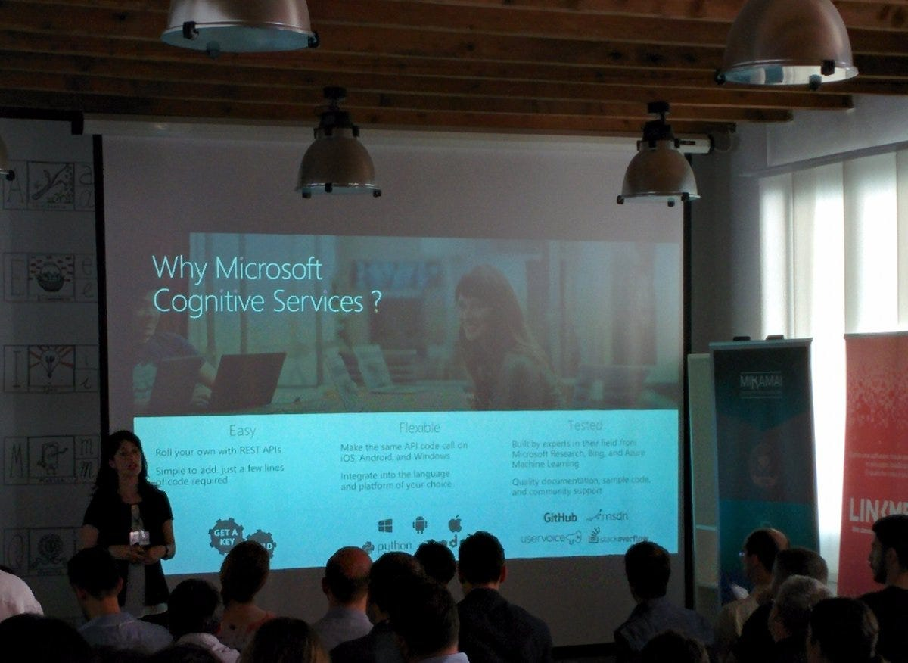
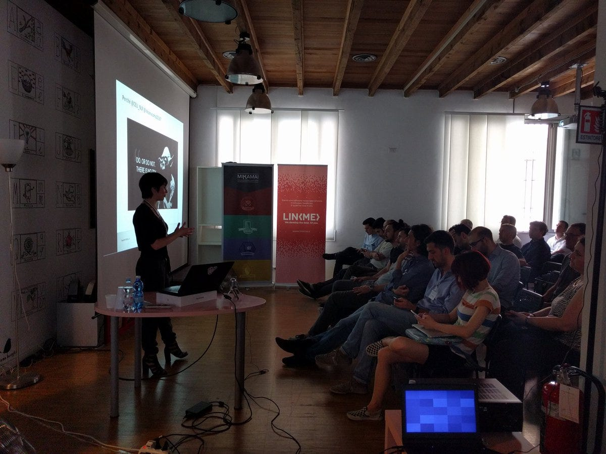

#convcomp2016 — News di Settembre
Gentili followers, alcune news per voi:
1. Prossimo Chatbots Meetup a Milano, il 29 Settembre
L’amico Paolo Montrasio, già speaker-manager all’evento #convcomp2016 dello scorso 24 giugno, organizza il prossimo meetup a Milano; partecipate numerosi! ISCRIVETEVI!

Mentre il chatbot-day #convcomp2016 del 24 giugno è stato un primo momento di incontro globale, il prossimo meetup di Settembre è il primo meetup “standard”, cioè in orario serale “post lavoro”.
L’idea è di creare dei meetup simili in differenti città italiane (Roma, Palermo, Genova, Trento, etc.) e continuare a sviluppare il networking!
2. Presto bots su Whatsapp ?
Sì certo, i Telegram-esaltati hanno un rispettabile snobbismo rispetto a Whatsapp (io lo disinstallai dal mio telefono un anno fà), ma ammettiamolo: l’economia dei bots partirà in Italia quando Facebook permetterà di sviluppare i bots sulla chat che in Italia usa il 95% (o forse più) della popolazione.
Ed ecco una comunicazione ufficale del 25 Agosto, passata forse inosservata: WhatsApp guarda avanti
Si tratta solo di media marketing (ancora :( ) o davvero entro la fine dell’anno anche su Whatsapp sarà disponibile una piattaforma di sviluppo bots (come o uguale a quella di Facebook Messenger) ?
Piaccia o no, penso che la bots-economy partirà in Italia quando sarà possibile sviluppare applicazioni su Whatsapp. Che ne pensate ?
3. Il blog www.convcomp.it
Usate questo blog! Postate i vostri articoli/news e commentate gli articoli! Tutte le istruzioni qui. Per ogni ulteriore info/proposte/etc. non esitate a contattare via mail la redazione: mailto:info@convcomp.it

Giorgio, 8 Settembre
Originally published on Medium.